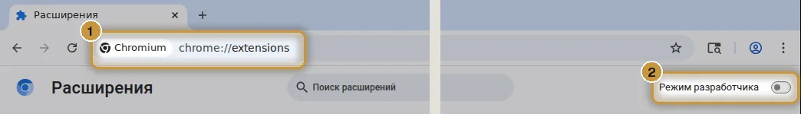
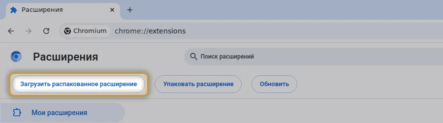
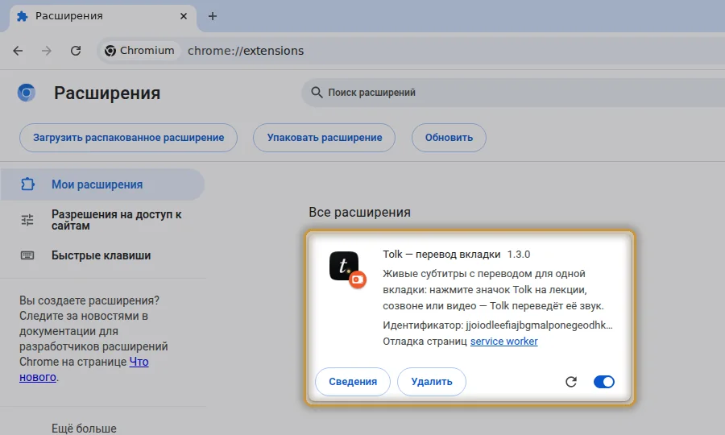
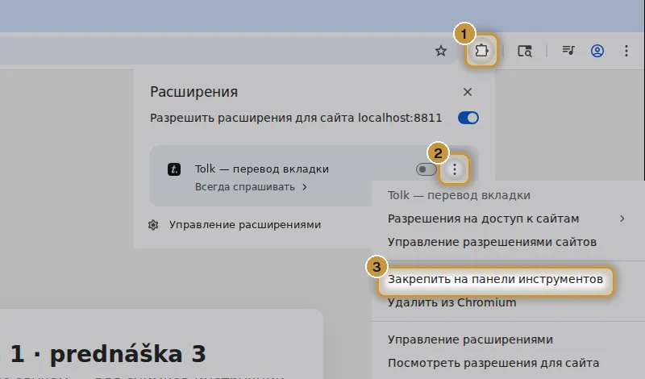
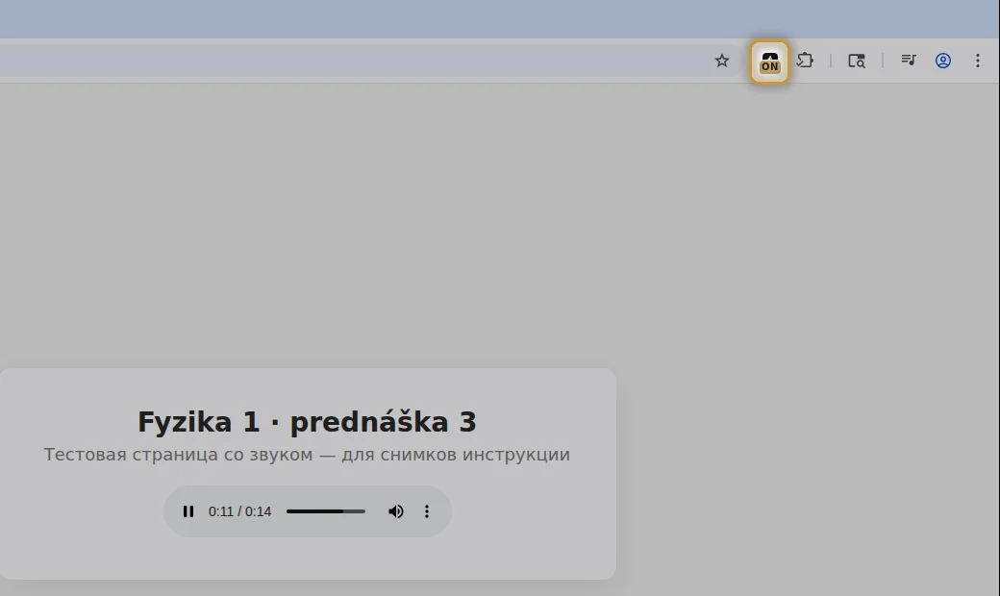
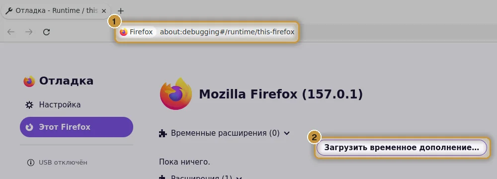
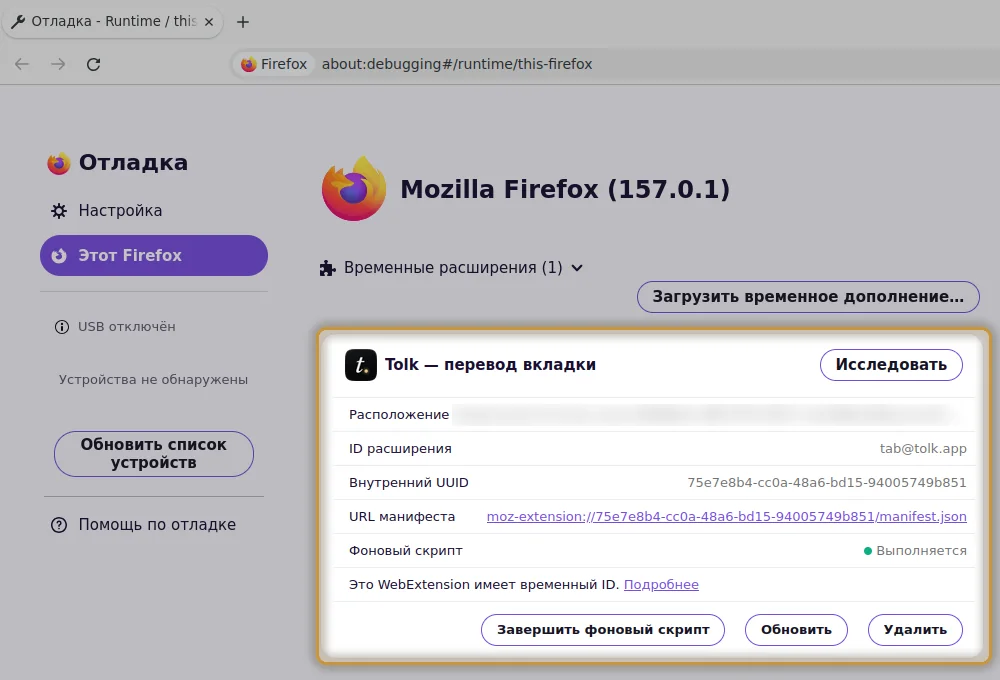
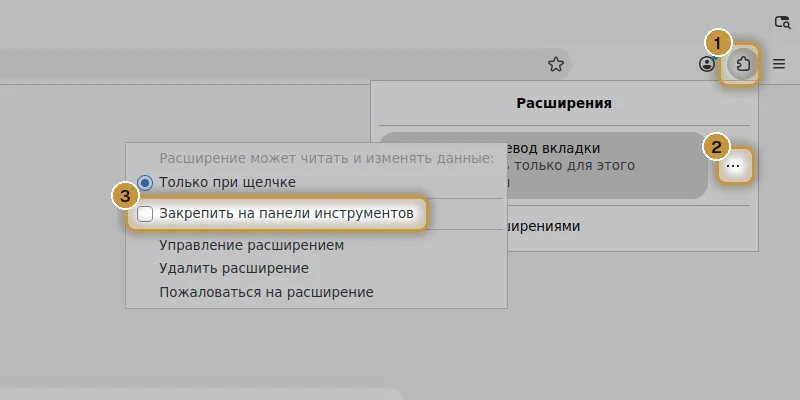
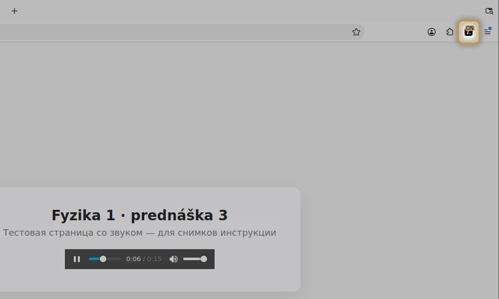
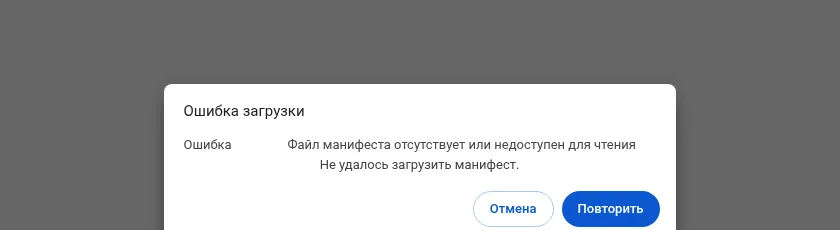

Расширение для браузера
Переводите одну вкладку.
Нажмите значок Tolk на вкладке с лекцией — и Tolk переводит только её звук. Музыка и другие вкладки не мешают.
Бесплатно. Ничего не уходит в интернет: звук идёт только в программу Tolk на этом компьютере.
Нужна программа Tolk — она должна быть запущена. Ещё нет? Скачать Tolk
tolk-chrome.zip
-
Распакуйте архив
Windows: правой кнопкой по архиву → «Извлечь все». Mac: двойной щелчок. Получится папка tolk-chrome — оставьте её на месте, например в «Документах»: браузер берёт расширение из неё.
-
Откройте страницу расширений
Скопируйте адрес своего браузера, вставьте его в адресную строку ① и нажмите Enter. Справа вверху включите «Режим разработчика» ② (в Edge он слева, в меню).

-
Загрузите папку Tolk
Нажмите «Загрузить распакованное расширение» и выберите папку tolk-chrome — ту, в которой лежит файл manifest.json.

-
Готово — расширение стоит
Появится карточка «Tolk — перевод вкладки». Если вместо неё ошибка — смотрите вопросы ниже.

-
Закрепите значок
Значок пазла ① → три точки у Tolk ② → «Закрепить на панели инструментов» ③. Теперь значок Tolk всегда под рукой.

-
Включите на лекции
Запустите Tolk, откройте вкладку с лекцией или созвоном и нажмите значок Tolk. Появится ON — перевод начнётся сам. Нажмёте ещё раз — выключится.

tolk-firefox.zip · распаковывать не нужно
-
Откройте страницу дополнений
Скопируйте адрес, вставьте его в адресную строку ① и нажмите Enter. Затем нажмите «Загрузить временное дополнение…» ②.

-
Выберите скачанный архив
Выберите tolk-firefox.zip — появится карточка «Tolk — перевод вкладки».

-
Закрепите значок
Значок пазла ① → «⋯» у Tolk ② → «Закрепить на панели инструментов» ③.

-
Включите на лекции
Запустите Tolk, откройте вкладку с лекцией или созвоном и нажмите значок Tolk. Появится ON — перевод начнётся сам. Нажмёте ещё раз — выключится.

Firefox убирает такое дополнение после перезапуска — тогда повторите шаги 1–2, это полминуты. Скоро Tolk появится в каталоге дополнений Firefox и будет ставиться насовсем.
Проще всего — из программы: Tolk → «Перевод и звук» → «Одна вкладка браузера» → «Подключить». Tolk сам скопирует адреса и путь к папке и отметит готовые шаги.
Если что-то не так
Ошибка «Файл манифеста отсутствует»
Выбран сам архив или не та папка. Сначала распакуйте архив, потом выберите папку tolk-chrome — прямо в ней должен лежать файл manifest.json.

На значке «!»
Tolk не запущен на компьютере. Откройте программу и нажмите значок ещё раз.
Как обновить расширение?
Если ставили из программы — Tolk обновляет его сам. Иначе скачайте архив заново, замените файлы в папке tolk-chrome и нажмите ↻ у Tolk на странице расширений. В Firefox — просто загрузите новый архив.
А Safari?
Расширения для Safari пока нет. Без расширения Tolk тоже переводит: в Tolk → «Что слушать» выберите браузер или звук компьютера.
Это безопасно?
Расширение включается только по щелчку на значке и отдаёт звук этой вкладки только программе Tolk на этом же компьютере. Оно не собирает историю и данные и ничего не отправляет в интернет. Подробнее — конфиденциальность.